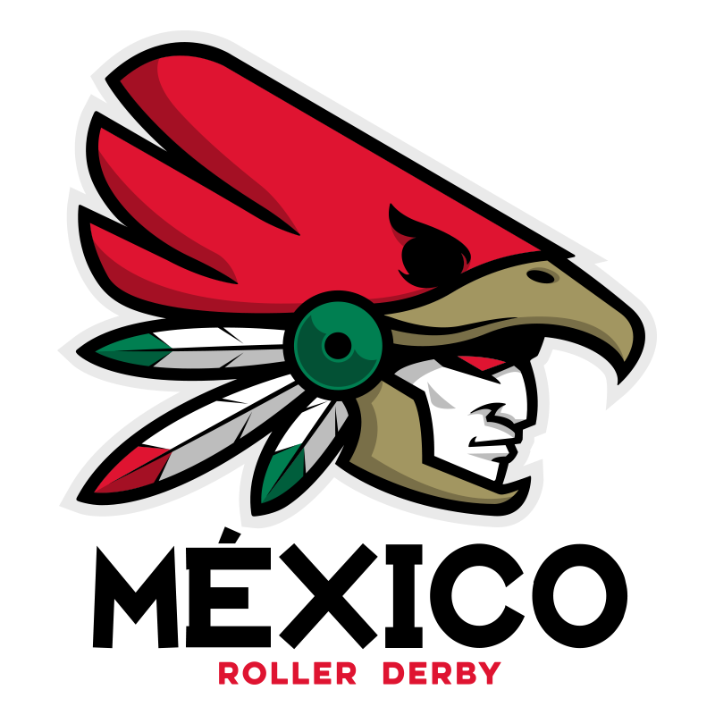

MRDWC 2016 Team Review: Team Mexico
As one of six teams new to the Men's Roller Derby World Cup, Team Mexico are something of an unknown quantity. When the first MRDWC was held, the sport was still growing in Mexico, but now they're heading to Calgary and the Red Group, alongside Finland, Ireland, Japan, Scotland and defending champions USA. [After this article was written, Colombia dropped out of MRDWC 2016, and Mexico was moved to Group Green to even out the groups. They now face Canada, Spain, Germany and Wales.]
Corina Fischer told us more about bringing together the team, and its aims for the tournament.

*Team Mexico will make their debut at the Men's World Cup. What are your aims in the tournament?
Most of all, we want to let the world know about the talent we have in our country, we look forward to sharing the track with all the amazing teams that are attending such an important event.
*You are in the largest group in the tournament, which also includes defending champions Team USA and last time's fan favourites NinJapan. Which teams are you most looking forward to playing? If you have time, who are you most looking forward to watching play?
Playing Team USA is a pleasure that not everyone has, so we are really looking forward to playing them.
*What's the level of interest in roller derby in Mexico? How did you go about recruiting and selecting the team for the World Cup?
There's several men's roller derby teams in Mexico, so getting skaters interested in trying out for Team Mexico wasn't an issue. We did two tryout dates, both with good attendance.
*What have you been doing in terms of fundraising and preparation for the trip to Calgary?
We had a GoFundMe campaign, we've been selling merch, and of course we have been able to reach our goals with the support of our sponsors Mota Skates en Espanol, S1 Helmets, DerbySkinz, Latin Roller and Roller Rey.
*This year, MRDWC are promoting the lead up to the Cup with the "Road to Calgary" tag. In the spirit of this, what bouts and training have you been doing in preparation?
We've had scrimmages all year, along with a preparation game against the MRDA 3rd place team, Texas Men's Roller Derby.
*After the last World Cup, several national saw increased awareness and interest in roller derby. What are your hopes for the sport in Mexico?
This is a growing sport, the feeling of community is what makes it greater. And now with our participation in the MRDWC 2016 more men will want to try this amazing sport.
- Team Mexico's first game is against Japan - at 12 noon Calgary time - on Thursday on Track 1, followed by Ireland at 5pm on Track 2. The official MRDWC schedule is located here. More information on Team Mexico can be found here. [Due to schedule changes, Mexico now face Wales on Track 1 (9am) followed by Canada on Track 2 at 1pm.]